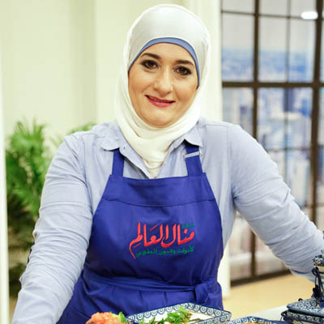

|
منال العالم (ليسانس أداب جامعة عين شمس - علم نفس القاهرة سنة 1981)
إلى كل محبيّ مطبخ منال العالم وإلى كل من يرغب في الحصول على الوصفة الصحيحة والطريقة السهلة والأكلات اللذيذة والمظهر المشهي لجيمع أنواع الأطباق المالحة والحلوة، العربية والغربية، نقدم لكم موقع منال العالم مع تمنياتنا للجميع بالإستفادة والإفادة
|
|

|
بيانات الخبرة
▪ قامت بتأسيس شركة – Food lines Advertising Company - للدعاية والأعلان بدولة الكويت 2000
▪ أقامت دورات متخصصة في فن الطهي لسيدات المجتمع منذ عام 1995 حتى 2007
▪ أقامت الدورات من 1995 حتى 2002 في أكبر الفنادق في دولة الكويت
▪ أقامت الدورات في مقر شركتها منذ 2002 حتى 2007
▪ أقامت - نادى منال – الذى يضم في عضويته 6000 سيدة من الكويت والدول العربية
▪ أعدت ونظمت عدد 7 مهرجانات في فن الطهي تشمل عروض ومسابقات منذ عام 1993 وحتى الأن
▪ قدمت عروض للطهي في المدارس الحكومية و لجمعيات النفع العام النسائية والدينية
▪ اقامت دورات متخصصة للشركات ( باناسونيك – بنك الكويت الوطني ...... )
▪ أقامت مهرجانات للشركات ذات العلاقة ( نستلة – أمريكانا ...... )
▪ قدمت وأعدت برنامج لتليفزيون الكويت – تسلم إيدك - 2002
▪ قدمت وأعدت برنلمج لتليفزيون MBC - مطبخ منال – 2003
▪ قدمت وأعدت برنلمج لتليفزيون MBC - رمضان كريم وخفيف – 2004
▪ قدمت وأعدت برنامج لتليفزيون الراى – سفرة منال – 2005
▪ قدمت وأعدت برنامج لتليفزيون الرسالة – أسرار منال – 2006
▪ شاركت في لجنة التحكيم الخاصة ببرنامج – النجم الشيف – لقناة MBC الذي عرض خلال شهر مايو 2007
▪ قدمت العديد من الدورات للفتيات من 8-15 سنة في فن الطهي
▪ قامت بإعداد الأطباق وتحضيرها وتصويرها للشركات
▪ قامت بإعداد التقارير والأستبيانات عن منتجات الشركات الغذائية
▪ على أتصال دائم بسيدات المجتمع الكويتي والعربي في الأنشطة المختلفة
▪ الأصدارات : " مجلة المطبخ " كل ثلاث شهور توزع مجانا على السيدات العضوات
▪ لها إصدارات عديدة : وصفات في بطاقات – كتاب 100 وصفة بسكويت –
مجلة وصفات مش معقولة – وصفات شهية .
▪ صدر لها أول كتاب يحتوى على وصفات مصورة في عام 2007 بحمد الله
▪ أعدت كتاب – الطهي بالميكروويف - بناسونيك
▪ أعدت كتاب – أرز المهيدب
▪ أنتجت إصدارات متنوعة ما بين صور أطباق وكتيبات و وصفات مصورة و برامج طهي
على – CD - DVD - شرائط Video ونشرات إخبارية .....
▪ الإسهام في أنتاج أصناف جديدة وتحسين منتجات موجودة في السوق لدي شركات كبري للمنتجات الغذائية
|
| Kuwait Danish Dairy Co ( KDD ) |
Coca Cola |
Philadelphia |
| Betty Crocker |
Pillsbury |
Ostrich meat |
| Kenwood |
Valbreso |
Tilda rice |
| National / Panasonic |
Americana |
IKEA |
| Majdi |
Kikkoman Soya sauce |
Muhaidib |
| Siemens / Bosch |
The Sultan Center |
Kiri |
| Afia oil |
Lurpak Butter |
Braun |
| Kitchen Aid Etc…. |
Hershey's |
|
|
|
من 1983 حتى الأنشاركت في الإعلانات على منتجات غذائية مثل – الحملة الإعلانية أزر إنديا جيت – عبارة عن دعايات خارجية على شكل بوسترات في الطرقات وعلى الباصات وفي الجرائد المشاركة في لجان التحكيم لمسابقات الطهي في كثير من الأماكن المشاركة في كثير من المهرجانات منذ عام 1983 المساهمة في اللقاءات والندوات والأجتماعات والمؤتمرات ذات العلاقة على قدر كبير من الدراية والمعرفة بمعظم ما هو جديد في عالم المطبخ والأسرة من خلال الأطلاع الدائم على كل ما يتعلق بذلك في الصحف والمجلات المتخصصة والكتب والتلفاز والأنترنت نشر مقالات ذات العلاقة في كل من :–
جريدة الوطن - جريدة القبس – مجلة مائدتي -
مجلة حبيبتي يا كويت - مجلة لنا "مطبخ منال" -
"اسرار منال" -"منال العالم" - " الشيف منال العالم" متواجدة على الأنترنت
|
|
تلك نبذة مختصرة عن منال العالم تبين مدى الخبرة التي تتمتع بها في عالم الطهي وإعداد الوصفات الصحيحة على مدى ثلاثة عقود أمضتها مع الوصفات تجربة وتذوقا وتعليما لتقدم الوصفة الصحيحة المضمونة تغذية ومذاقا ومظهرا.
|